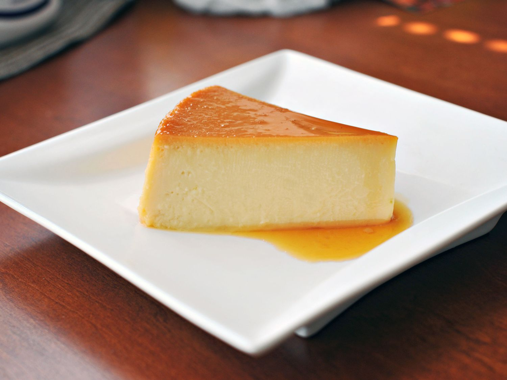

Habichuelas con Dulce
A sweet, creamy dessert made from red beans, coconut milk, sweet potato, raisins, cinnamon, and cloves. Uniquely Dominican and often served during Easter.

Other Popular Desserts
-
Majarete (Sweet Corn Pudding)

-
Dulce de Coco

-
Dulce de Lechosa (Papaya Jam)

-
Arroz con Leche (Cinnamon Rice Pudding)

-
Flan de Leche
